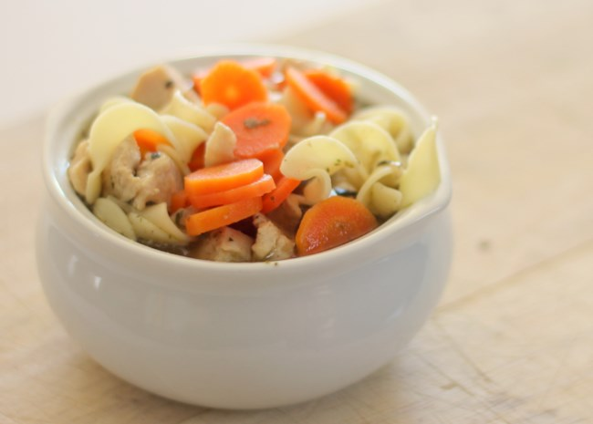

Links Quick Chicken Soup

When you don't have time to make your soup totally from scratch, this is a very easy, very good substitute.
Ingredients
1 tablespoon butter
½ cup chopped onion
½ cup chopped celery
4 (14.5 ounce) cans chicken broth
1 (14.5 ounce) can vegetable broth
½ pound chopped cooked chicken breast
1 ½ cups egg noodles
1 cup sliced carrots
½ teaspoon dried basil
- ½ teaspoon dried oregano
- salt and pepper to taste
Method
- In a large pot over medium heat, melt butter. Cook onion and celery in butter until just tender, 5 minutes. Pour in chicken and vegetable broths and stir in chicken, noodles, carrots, basil, oregano, salt and pepper. Bring to a boil, then reduce heat and simmer 20 minutes before serving.
home page